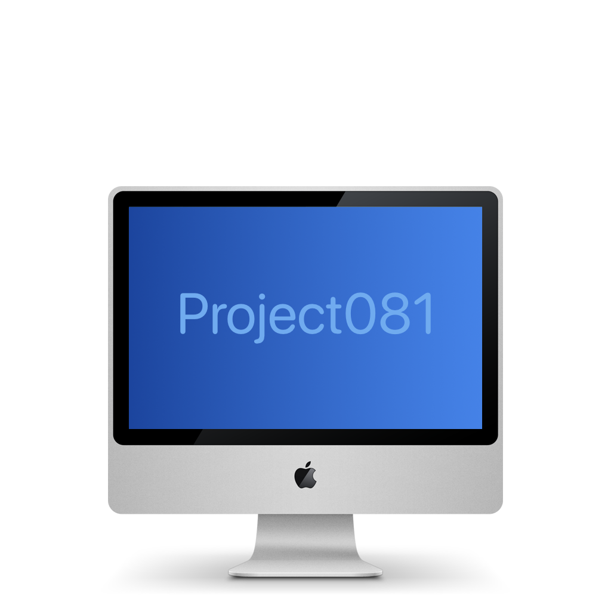

Back
Project 081 Beta 1
Project 081 Beta 1 (0.2 fix) is the latest version of Project 081 available. It does not have any release notes. Write the DMG to a USB flash drive or
burn it to a DVD, then boot from it if your machine is compatible.
For more information, visit the GitHub repo!
Download latest
Google Drive Folder
Public Archive
Public Google Drive folder for Project 081
Might be useful, but it's a placeholder for now.
Public archive not related to Project 081
but you might find something you'd like!
Google Drive Folder
Google Drive Folder